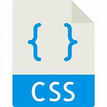

Galería de Imágenes


Soy una apasionada diseñadora y desarrolladora frontend con experiencia en la creación de interfaces web visualmente atractivas y funcionalmente sólidas. Mi enfoque principal es combinar mis habilidades en diseño.
Soy un apasionado desarrollador de frontend con experiencia en la creación de interfaces web y aplicaciones interactivas. Mis habilidades incluyen HTML, CSS, JavaScript y diversos frameworks como React, Angular y Vue.js. Disfruto colaborar en equipos.
Mi enfoque centrado en el usuario y mi atención al detalle en proyectos de diseño de interfaces (UI) y experiencia de usuario (UX), con el objetivo de crear experiencias digitales impactantes que satisfagan las necesidades del usuario.
Mi enfoque se centra en la generación de contenido relevante y atractivo para el público objetivo, con el objet
Mi enfoque se centra en la generación de contenido relevante y atractivo para el público objetivo, con el objetivo de aumentar la visibilidad y el compromiso con la marca.
Identifico y capto los errores, así como la elaboración de informes detallados sobre el rendimiento del software. Además, resalto mi capacidad para trabajar en estrecha colaboración con equipos de desarrollo para garantizar la calidad.
